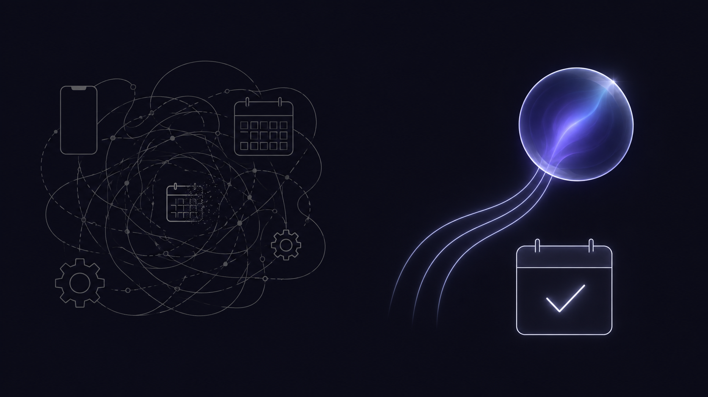

上周开庭前整理证据材料，脑子里冒出来一句“周四下午得跟助理对一下质证意见”。当时手边全是卷宗，我想着等会儿再记。晚上十点收拾桌面的时候，想起来的只剩“好像有件事”。
内容没了。那条日程没进日历，周四下午我大概率会在卷宗里泡过去，直到助理来敲门。
律师的日程几乎全是说出来的：路上一个电话定了会，走廊里应了一句“下周我看一下这份合同”。挂了电话、走过去，这条日程就开始进入消失流程。掏手机、解锁、找日历、点加号、填标题、滚时间轮盘、设提醒，七个动作做完，经常忘了要记的到底是三点还是四点。
所以我给自己做了一颗小球。按住它说句话，松开，日程的标题、时间、提醒就摆在一个确认面板里，看一眼没问题，点“添加到日历”，结束。用了几个月，它现在是 v1.5 公开测试版，叫记忆球 MemoBall。
这篇文章讲三件事：它解决什么问题，怎么用，以及我为什么敢让它碰我的日历。
一、日程都死在哪
复盘下来，日程的死法主要有三种。
最常见的是说出来的留不住。口述是效率最高的输入，却是录入链路最长的：从“明天下午三点和张三开会”到日历里的一条事件，中间隔着七次点击和两轮注意力切换。摩擦大到一定程度，人会自动放弃记录。而且这事儿有惯性：放弃十次之后，脑子里再冒出日程，你连掏手机的冲动都没有了。
其次是文件里的日程要人肉搬运。会议通知是 PDF，活动海报是图片，开庭传票是扫描件。看完了，知道了，然后自己把时间地点抄进日历。抄错时间比不记还糟，错误的安排比空白更耽误事。
还有一种更隐蔽：全自动的 AI 不敢用。不少“智能助手”宣传全自动，读到时间直接写入日历，一步不确认。听起来省事，但它第一次把“下午三点”写成“凌晨三点”，第一次把口误原样记进去，你对它的信任就清零了。日历是被污染不起的东西，一条错日程的代价可能是放客户鸽子。
所以这颗球的设计原则就一句话：AI 干提取的脏活，人来按最后那个按钮。全自动省掉的那一步，恰恰是最不能省的确认。

二、认识记忆球
记忆球是一颗 64pt 的玻璃小球，悬浮在屏幕边缘。平时它贴边收成一条 20pt 的小边条，不挡任何东西；鼠标扫过去，它滑出来。拖到哪，位置就记住哪。
它只做一件事：把你说的话、拖给它的文件，变成可以确认的日程。
按住说话。按住小球开始录音，松开结束，空格键也行。“明天下午三点和张三开会”，松手，进入处理。
拖文件给它。PDF（扫描件也行，走系统 Vision OCR）、Word、txt / md / rtf / html，拖到球上悬停，球变橙色，提示“松开以读取”。会议纪要、活动通知、课程表，丢过去就行。
它有六种状态：空闲、录音、拖入、处理、成功、失败。每种状态有明确的颜色，但颜色从来不是唯一信号，还有动画、文案和 VoiceOver 播报兜底。开着系统“减弱动态效果”，动画自动静态化；用 VoiceOver，处理阶段会实时念出来。
三、使用流程：从安装到第一条日程
产品目标里写着一条硬指标：新用户要在两分钟内建好第一条日程。下面是完整流程。
第一步：安装
去主页 memoball.chenshi.ai 下载 DMG（需要 macOS 14 及以上、Apple Silicon 芯片），打开，把“记忆球”拖进应用程序文件夹。
测试版没有做 Apple 签名公证，首次打开如果提示“已损坏，无法打开”，别慌，这不是软件坏了，是签名缺失。打开终端，执行一行命令：
xattr -dr com.apple.quarantine /Applications/MemoBall.app再双击打开就好。正式版会做签名公证，不需要这一步。
第二步：给它一个大脑
记忆球自己不带大模型，它需要一个负责“理解日程”的模型。本地、云端两条路线：
本地路线（推荐，隐私最好）：
- 到 ollama.com 下载安装 Ollama
- 终端执行
ollama pull qwen3:8b - 右键小球 → 设置，保持“自动检测”就行
Ollama 免 API Key，服务没运行时记忆球会自动帮你拉起。实测 qwen3:8b 提取一条日程约 5 秒。注意选指令型模型，别选带长思维链的推理型模型（比如 granite 系列），那些模型又慢又不守输出格式，报错不是你说话的问题。
云端路线（开箱即用）：右键小球 → 设置，选一个预设（DeepSeek / Kimi / 通义 / OpenAI），填 API Key，点“从服务端拉取”选模型。Key 存在系统钥匙串里，不明文落盘。
一个坑提前说：系统设置 → 声音 → 输入，默认输入设备必须是真实麦克风。如果装过 IdeaShare、BlackHole 这类虚拟声卡并且它恰好是默认设备，录到的会是纯静音，而且应用不报错。这是 macOS 的行为，不是记忆球的 bug，但它能让第一次体验直接失败。
第三步：对它说话
按住小球，说“明天下午三点和张三开会，提前半小时提醒”，松开。
球内会出现一段“极光吸入”动画：粒子向中心汇聚，代表它正在识别和理解。读取内容、识别语音、理解日程、准备确认，四个阶段都有文字提示，随时按 Escape 取消。
第四步：确认，写入
确认面板弹出来，没有倒计时，不会自动消失。标题、时间、提醒、日历、备注，每一项都能改；模型猜的字段标“推断”，规则补的默认值标“默认”；一段话里有多个日程就逐个勾选。检查无误，点“添加到日历”。
球体来一次 0.3 秒的亮环结晶，然后回到常态。零弹窗。写错了？结果面板里点“撤销”，只删刚才这条，不碰你其他日程。
四、为什么敢让它写日历
确认面板里的“推断”和“默认”两个徽标，是整个产品我最在意的设计。
大模型提取日程，本质是猜：标题是猜的，“提前半小时”是听出来的，没说时长的会议默认一小时是猜的。多数工具把猜的结果直接给你看，猜对猜错要你自己发现。记忆球把“哪些是模型猜的、哪些是规则兜底的”标在每个字段旁边，你可以只盯着标了“推断”的地方检查。
处理过程全程可见。球内动画就是处理进度，四个阶段逐个播报，不确定就按 Escape，它立刻停下。失败也不沉默：断网、模型超时、文件读不出来，每种失败都有一条说人话的文案，带“重试”和“去设置”按钮。“没有静默失败”是写进产品目标的硬指标，48 项自动化测试里专门有一组盯着这件事。
写入有回执。每次写入生成一条回执留痕，撤销时只删回执对应的事件，不误伤其他日程。
五、隐私：两条路线，话都说在前面
律师对“内容上云”敏感是职业本能，这颗球的隐私设计是照这个标准做的。
本地路线，口述和文件内容不出本机，模型就跑在你自己的芯片上。云端路线，首次发送内容前会弹窗告知内容将发到哪家提供方，显式点“继续”才发送；同意按提供方分别记忆，设置里随时清除。
API Key 存系统钥匙串，不进明文配置。日志里只有阶段、时长、状态码、错误类别，你的口述原文、文件内容、文件路径、模型输出，一概不记。这句我可以拿开发记录背书：日志系统是类型化的，想记内容都没有对应字段。
权限全部即时申请。麦克风、语音识别、日历，都不在启动时索取，首次用到对应功能才弹窗，录音前还有一次说明。
六、诚实清单
主页上挂着一份“已知限制”，这里照登：
- “每周三”这类指定星期几的重复日程，目前按普通“每周”处理，原文会保留在备注里
- .pages 文件不支持；非 UTF-8 编码的老 txt 可能读取失败
- 多个提醒时间只取第一个
- 测试版没有自动更新，新版需要重新下载安装
这些是真实的边界。我倾向把它们写清楚：工具要可信，先得交代清楚自己做不到什么。
另外两件不太起眼但花了大力气的事：整颗球零第三方依赖，全部用 macOS 系统框架实现；48 项自动化测试覆盖契约、单元和确定性渲染。正职是律师，写代码的时间有限，所以更得把该做的做到位。
七、开发者说
我的正职是律师。做这颗球的起因很简单：我的日程资产每天都在嘴里流失，等不来一个现成的工具，就自己动手。
整个过程 AI 帮了很多，但最难的坑恰恰在 AI 之外。印象最深的一个：所有模型（本地的 Qwen、云端的 DeepSeek 都一样）都会把“下午三点”写成正确钟点、再错标一个 UTC 后缀。日历按绝对时间一存，下午三点的会就漂成晚上十一点。模型觉得自己没错，用户看到的全是错。最后做了双层防御：提示词里严禁 UTC，解析层再把可疑的时间按本地时区重新解释一遍。这个坑让我确认了一件事：AI 应用的质量瓶颈往往不在模型，在模型和系统之间的那层工程。
这颗球让我记住的另一件事是：模型的能力每年都在涨，真正花时间的是模型外面那一圈东西。它要小，小到常驻屏幕不碍事；要在每次写入前停下来等你点头；做不到什么，就直说。这些没有一样是聪明活，但少一样，这颗球就只是个 demo。
八、来试一试
- 主页：memoball.chenshi.ai（下载 DMG、看动画演示、读完整说明和已知限制）
- GitHub：github.com/CSlawyer1985/MemoBall
- 反馈邮箱：worldmodel@agent.qq.com
v1.5 是公开测试版，免费。装好后建议把测试清单过一遍：说话建日程、拖个 PDF、试试撤销、断个网看它报不报错。
遇到问题欢迎反馈，附上“你在哪一步、屏幕上显示了什么、期望和实际分别是什么”就够，不需要提供口述内容和文件，应用本身也不会记录这些。
反馈会直接进 v2 的待办清单。目前排队的候选：开机自启、全局快捷键、识别语言跟随系统。
欢迎来踩一踩。
作者简介： 陈石律师（主页 chenshi.ai），浙江海泰律师事务所副主任、高级合伙人、房地产与建设工程部主任，宁波市律师协会副秘书长、第七届宁波仲裁委员会仲裁员，聚焦建筑房地产、投融资、并购重组及商事争议解决。曾获多家法律媒体与专业机构认可，荣登 LegalOne 2025 中国区建工及房地产实务先锋 45 强、律新社 2025 年度管理合伙人 20 佳（华东），入选《商法》The A-List 法律精英，获评 ALB China 区域市场十五佳长三角地区律师新星，并获律新社 2024 年度并购领域品牌之星。长期为万科、华润置地、信达地产、保利置业、招商蛇口、中海地产等企业提供法律服务，承办“首宗百亿地王”“长春第一高楼”“台州第一高楼”等代表性项目，累计服务项目投资额超千亿。近年来持续推动 AI 与法律实务融合，强调以结构化方法打通技术逻辑、法律判断与商业场景；著有《赋能法律人：AI 底层思维与应用范式》，并在多地开展相关主题讲座与分享。